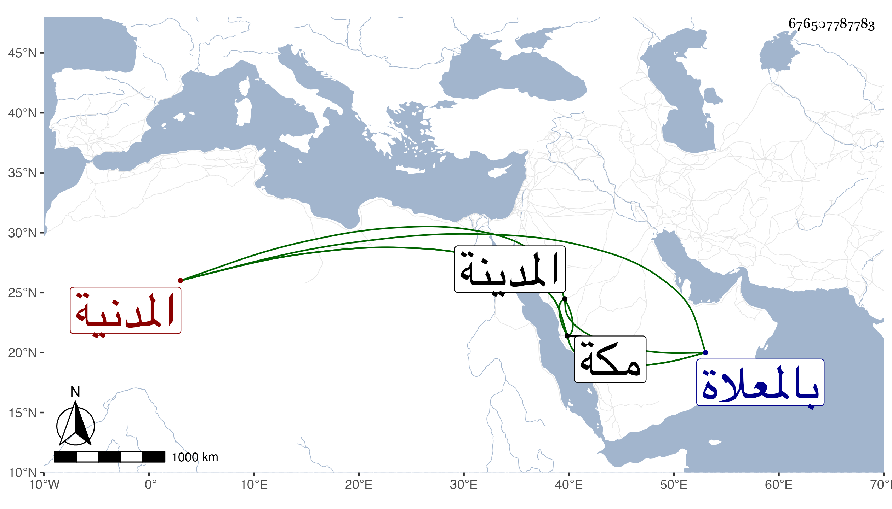

0902Sakhawi.DawLamic.ITO20230111-ara1.EIS1600.676507787783
Biography ID: 676507787783
437
صفية ابنة محمد بن محمد بن عمر بن عنقة أم الحياء ابنة المحدث الشمس أبي جعفر السكرية الأصل المدنية سبطة الجمال يوسف بن إبراهيم بن البناء ونزيلة مكة . حضرت في الأولى في ربيع سنة تسع وثمانين وسبعمائة بالمدينة النبوية على جدها لامها المشار إليه نسخة أبي مسهر وفي الرابعة على العراقي ألفيته في السيرة النبوية من نظمه بفوت وسمعت على ابن صديق . وأجاز لها أبو هريرة بن الذهبي التنوخي وابن أبي المجد وجماعة وحدثت وممن أخذ عنها النجم بن فهد وأرخ وفاتها في ليلة الجمعة رابع شوال سنة خمس وأربعين بمكة ودفنت بالمعلاة رحمها الله .
